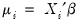
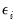
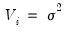
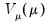
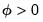
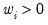
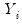
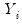
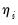
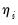

The conventional linear regression model assumes that the

is a linear predictor formed from the explanatory variables and coefficients, , and that  is normally distributed with zero mean and constant variance .
where  is a distribution-specific variance function describing the mean-variance relationship, the dispersion constant  is a possibly known scale factor, and  is a known
prior weight that corrects for unequal scaling between observations.
Accordingly, Wedderburn (1974) shows that one need only specify a mean and variance specification as in Equation (32.2) to define a quasi-likelihood that may be used for coefficient and covariance estimation. Not surprisingly, for variance functions derived from exponential family distributions, the likelihood and quasi-likelihood functions coincide. McCullagh (1983) offers a full set of distributional results for the quasi-maximum likelihood (QML) estimator that mirror those for ordinary maximum likelihood.


 independent response variables , each of whose conditional mean depends on
independent response variables , each of whose conditional mean depends on  -vectors of explanatory variables
-vectors of explanatory variables  and unknown coefficients
and unknown coefficients  . We may decompose
. We may decompose  into a systematic mean component,
into a systematic mean component,  , and a stochastic component
, and a stochastic component 
 belonging to the linear exponential family.
belonging to the linear exponential family. and the linear predictor .
and the linear predictor . may be written as functions of the linear predictor:
may be written as functions of the linear predictor: